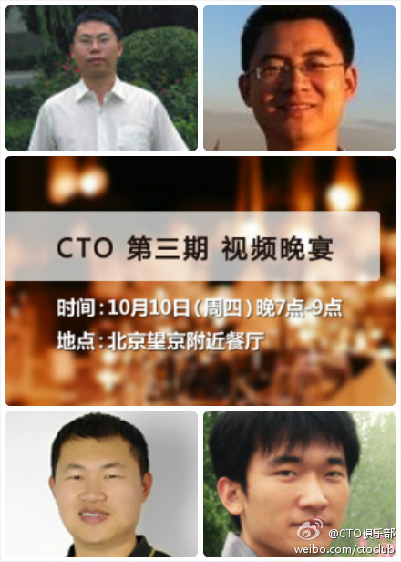

十一回家乡，用个新的视角看看熟悉的故地。@CSDN产品客服:#博客#CSDN博客《说说家乡的互联网》主题征文活动开始，转发本微博并@三位好友，就有机会获得CSDN下载频道VIP卡一张，下载免积分，10月8日、15日、22日每天抽取一名幸运用户，转发越多，获奖机会越高哦~活动详情见网页链接
晚宴作为CTO俱乐部的活动还是很受欢迎得，前两期到会率皆是100%@CTO俱乐部:欢迎报名参加#CTO俱乐部# 晚宴，与国内视频行业一线大佬们共进晚餐，畅谈视频行业发展趋势，交流视频业务技术难题，我们已邀请到风行网创始人/CTO@风行唐柯 、乐视网CTO@乐视网杨永强 、暴风影音CTO@暴风杨立东 、凤凰视频产品总监@Running929 。@蒋涛CSDN @刘江总编 @Ada李力 网页链接 